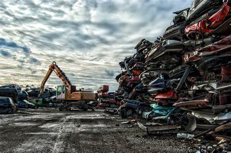

Testimonial
It's a little intimidating being a woman and going to a scrapyard. But the staff at Scrap it are always helpful, friendly and professional. So, Girls if you need extra money and know a little bit about scrapping metal go to Scrap It. Their prices are good and they will help you through the entire process.